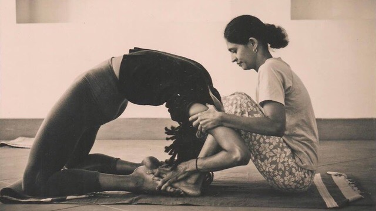

Our Story
Shashikala shares her wisdom as an Ashtanga yoga teacher in the sacred city of Mysore, India. She holds the distinction of being one of just two female teachers who taught in Mysore, alongside Saraswathi, daughter of the revered Shri K. Pattabhi Jois. Her journey in yoga spans over 15 enriching years, during which she practiced with Pattabhi Jois from 1994 until his transition in 2009. Today, she guides students at The Three Sisters Yogashala near Lakshmipuram, where, as the youngest of three sisters, she and her family continue their cherished tradition of supporting yoga practitioners who journey to Mysore to deepen their practice.
